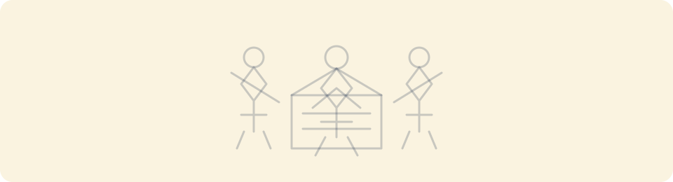
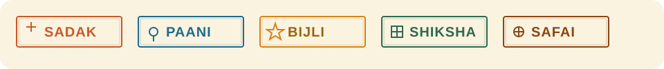
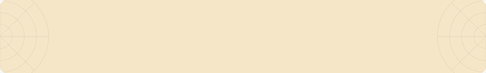

ELEMENT 01 — HOMEPAGE HERO
Kolam dot grid
5% opacity, 40px rhythm. Felt, not seen. Use behind hero copy and large mastheads only.
SYSTEM PAGE
Standalone SVG craft elements for direct Figma import. These live in the frame, state, and label layers, not inside data views.
ELEMENT 01 — HOMEPAGE HERO
5% opacity, 40px rhythm. Felt, not seen. Use behind hero copy and large mastheads only.
ELEMENT 02 — SECTION BREAK
16 to 48px divider rhythm. Stationery perforation feel, never a decorative banner.
 Open SVG
Open SVG
ELEMENT 03 — EMPTY + LOADING
Single-color geometric scene for process, empty, and waiting states. Remove it when real data appears.

Open SVGELEMENT 04 — BADGE SURFACE
Square-ish geometry, thicker border, slight print-frame feel. Craft touches the label, not the data.

Open SVGELEMENT 05 — FOOTER RHYTHM
Highest-impact institutional craft element. Use only at dark footer or masthead edges.
ELEMENT 06 — CORNER ORNAMENT
Corner-only geometry. Use at low opacity on maps, headers, or ceremonial intro panels.

Open SVG{kind=link}
{kind=link}
{kind=link}
{kind=link}
{kind=link}